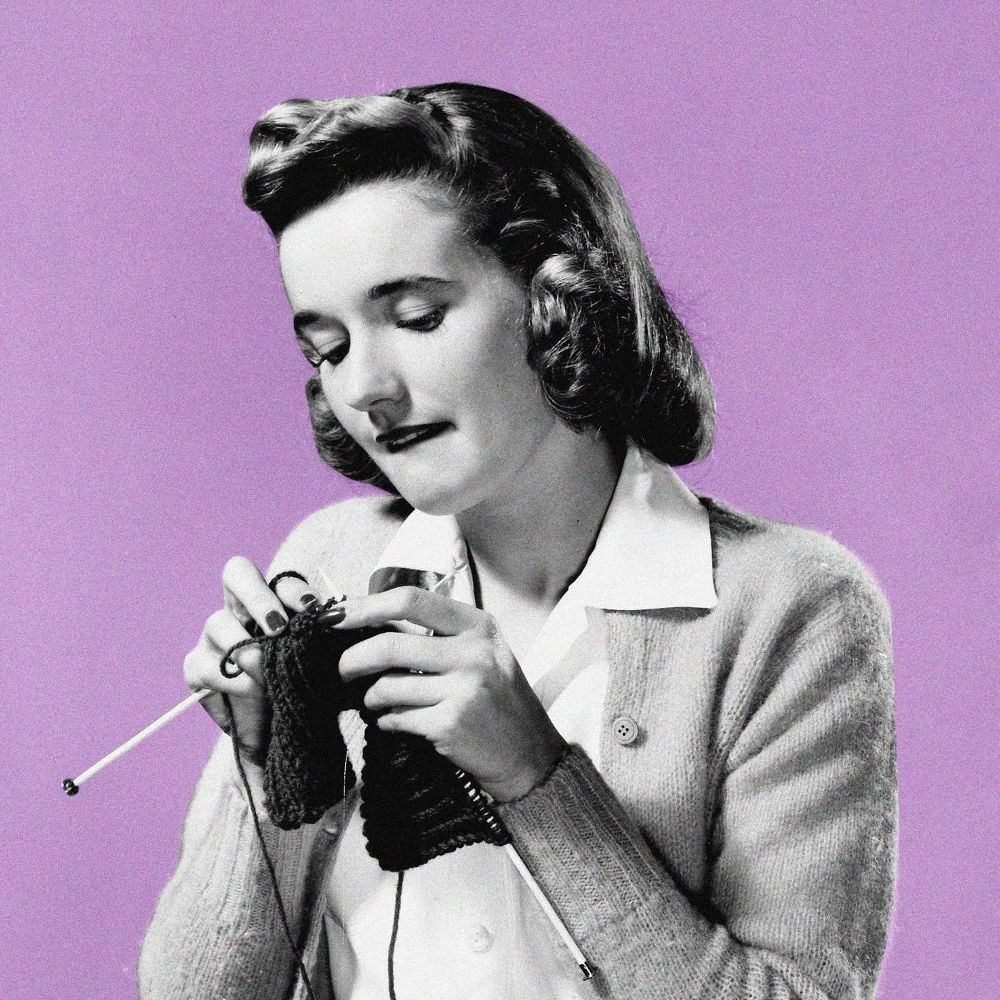

A good sign I’m not doing especially well, anxiety-wise, is when I decide, impulsively, that I am “getting really into” an activity I’ve either never done before, or never managed to stick to. I’ve glommed onto adult coloring books, knitting, cross-stitch, and watercolors. I’ve considered ceramics, language classes, and marzipan molding. I see something appealing on Instagram, I order the supplies, I do it a few times, and then … I stop. And I feel bad. Why can’t I commit?
Most recently, I failed to pick up tarot, which is one of those things I keep thinking will be different if only I try again with a shiny new deck. Every so often, I’ll get it into my head that reading tarot will become my party trick. In theory, it offers everything I want in a social interaction: It’s one-on-one, it’s nosy, and it encourages me to tell someone else what to do. Normally, the idea floats out of my head as quickly as it floated in. But a few months ago, I decided to go all-in. I bought tarot books and took notes. I made flashcards. I spent a weekend trip with friends trying to memorize all the minor arcana. I did practice readings for my friends, to mixed results. Then I went home, and put my tarot books away, probably for good.
Maybe it shouldn’t bother me so much, but the thing is, having a hobby is really good for you. Hobbies make us happier because they contribute to our sense of identity; and because having a strong identity outside of work makes us more content at work, one could argue that having a hobby also makes for better employees. Having an “enjoyable leisure activity” (a.k.a. a hobby) is good for your physical health, too — one 2009 study published in Psychosomatic Medicine found that people who reported pleasurable and frequent participation in hobbies were found to have lower blood pressure, as well as perceptions of better physical function.
So I would like a hobby, please, and one I can stick to. While I am often tempted by the swan song of the “side hustle,” what I really want is something I can do for fun without worrying about producing something. Writing is out (that’s my job). Reading is a hobby, but I’m so competitive about it (both in terms of how many books I read and how I compare to what I am reading) that it also feels like work. I exercise, but that, to me, will always feel a little too punishing to count. You’ve heard about some of my other failed attempts. What am I missing?
Concerned that my hobbyless-ness might be a me problem, I got in touch with David Conroy, a professor of kinesiology and human development at Penn State, whose research is focused on motivation and behavioral interventions. The good news: It’s not just me.
“I think it’s hard for everybody to fit new things into their lives, because it’s a zero-sum game, where in order to create time for a new activity, you have to take that time away from doing something else,” says Conroy. Most people are already living a pretty precarious balance between work, family, and other responsibilities, says Conroy, so it’s important to acknowledge that anyone hoping to introduce (and maintain) a new hobby is “swimming against the tide.”
Still, it’s not impossible — we all know busy people who regularly find time to loom rugs or propagate plants or join their bowling league, or whatever. Conroy says there are two main criteria we should use to evaluate any prospective new hobby’s viability in our own lives: (1) Is it easy?, and (2) is it enjoyable?
